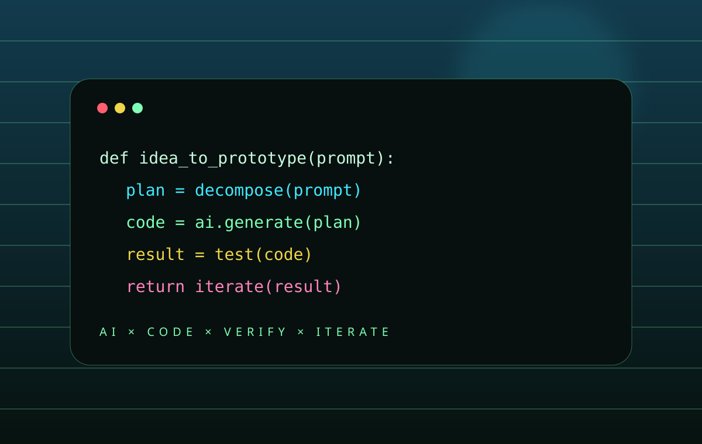
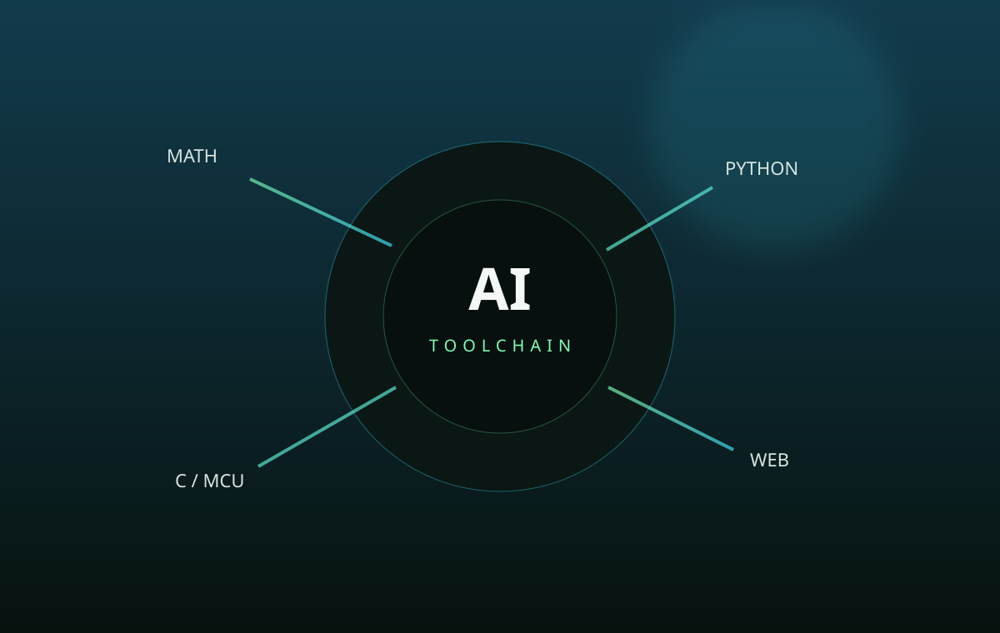
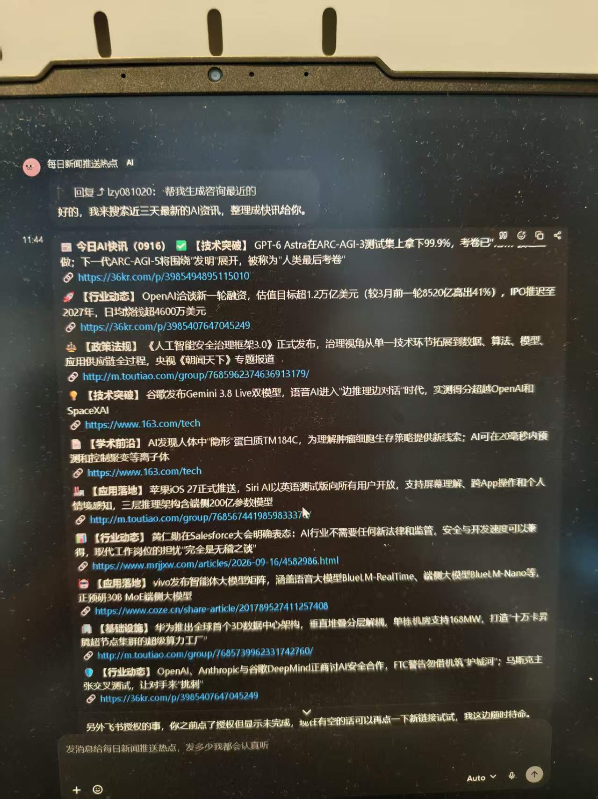

AI + 编程
开发者
我会借助 AI 和更高效率的工具快速验证创意，但更关注生成之后的理解、调试、重构与验证。对我来说，Vibe Coding 不是跳过基础，而是把重复劳动压缩，把更多精力留给创造、判断和“框架之下的可能性”。AI 是放大器，数学、代码与工程基础决定被放大的质量。
从一句想法，
到可以运行。
图片优先呈现作品，说明文字在需要时再展开，让页面更像作品集而不是长篇自述。



编程能力，
保持增长。
数值只是阶段记录，不把“会什么”包装成永远不变的标签。
会用 AI，
也要看懂 AI 写了什么。
当前重点：Python 基础、C 语言、Web 前端、算法思维；后续逐步进入 NumPy、Pandas、数据结构、PyTorch 与机器学习。
- 用小项目形成正反馈
- 从错误与调试中理解代码
- 把数学概念连接到机器学习
- 保持项目可运行、可解释、可复现
工具是放大器，
我负责判断方向。
不迷信工具数量，只留下真正融入日常的组合：从桌面效率到内容创作，再到 Agent 工作流与数据处理，AI 帮我压缩重复劳动，把时间留给思考与创造。
桌面效率插件组合
把重复操作压到最短：Listary 全局秒搜文件、快速启动程序；Snipaste 截图、贴图钉屏、随手标注；网页图片一键提取，收集素材不用再一张张右键另存。
AI 沉淀个人知识库
用 AI 把课堂笔记、资料和学习记录整理成可检索的知识库，支持跨文档归纳与问答式复习，让平时的积累随时能被调用。
AI 做 PPT
一句话生成大纲，再扩写为完整演示稿：排版、配图、演讲备注一体完成，我负责校准内容逻辑与视觉审美。
AI 自媒体文案
从选题到成片脚本：标题钩子、口播稿、分镜文案都能生成与改写，同一内容快速适配抖音、公众号等不同平台的表达风格。
AI 开发 Agent 工作流
在智能体平台上搭建多步骤工作流：任务拆解 → 工具调用 → 联网检索 → 自动执行，像搭积木一样编排重复事务。
AI 处理 Excel
看不懂的公式直接问，说清需求就能生成公式与函数；数据清洗、分类汇总、透视分析交给 AI，表格效率成倍提升。
不是截图，
点击就能玩。
卡片上是两款本地 HTML 小游戏的真实运行画面，点击即可在浏览器里直接开玩。游戏文件已随网站一起打包，不依赖 localhost。


我不是一个数学成绩，
而是一颗正在演化的数学大脑。
时间轴 × 难度轴 × 问题日志 × 遗忘复苏。所有数据都以“可继续校准”为原则，不把尚未发生的成果写成已经掌握。
难度—熟练度动态热力图
横轴：分析、代数、几何、概率、计算数学；纵轴：季度。格子数字代表该阶段可独立处理问题的“难度等级”记录：1=本科基础，2=研究生核心，3=科研前沿。当前仍处大学前置阶段，所以数据刻意保持在 1 以下；颜色越深表示离下一个独立解决层级越近。
问题解决日志 · 微型里程碑
技能衰退与复苏曲线
数学能力会遗忘，真正值得追踪的是“多久能找回来”。目前还没有足够长期的真实准确率数据，所以曲线明确标为机制示意；以后可选一个专题（如微积分基础题），按周记录正确率与重练时间，再计算复苏斜率。
AI 学习认证，
把阶段成果留下来。
证书不是终点，只记录我在大模型、Prompt 工程、智能体应用与 AI 训练相关方向上的阶段性学习。点击任意证书可查看大图。
备考这些证书，让我系统走过 Prompt、微调、RAG、AIGC；但比技术更重要的收获，是一套从底层原理到应用边界、从“怎么用”到“为什么这样用”的 AI 通识框架。
学习不是被动接收，而是主动搭建自己的认知框架——技术会过时，好的学习方法不会。
我想做那个先跑一步、再回头拉大家一把的人，和每个人一起，从“会用”走向“理解”。